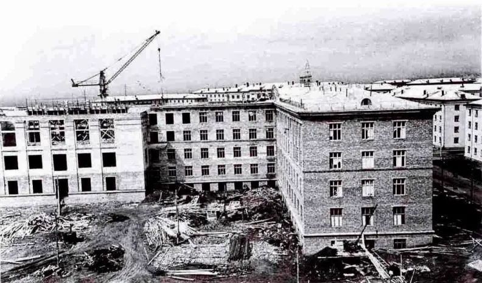
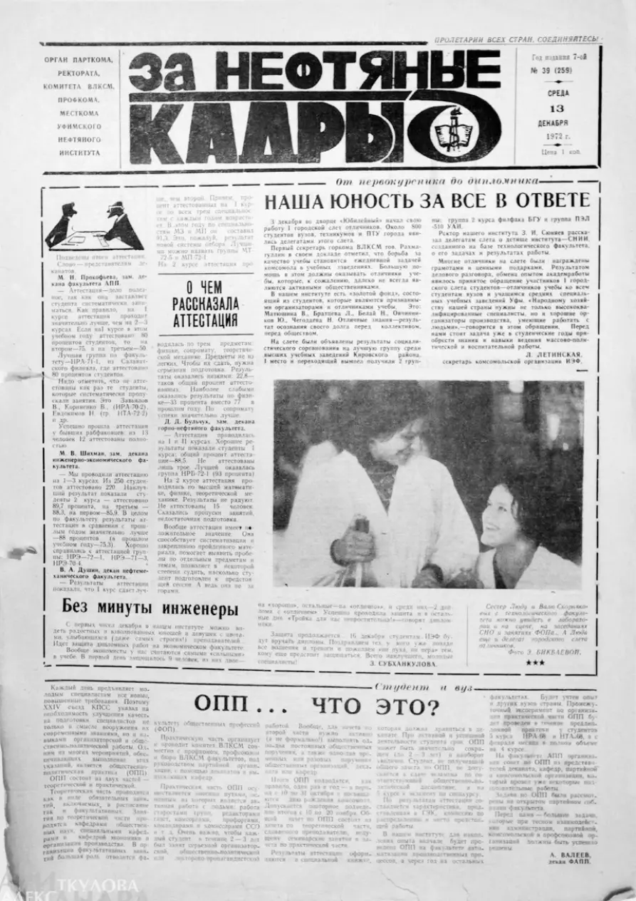
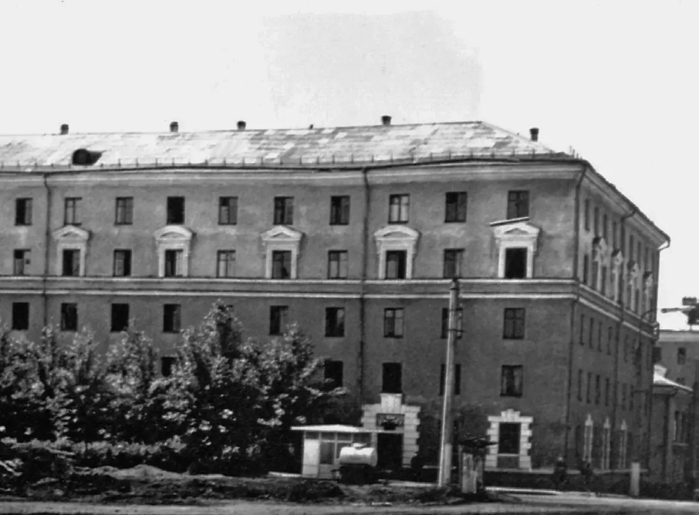
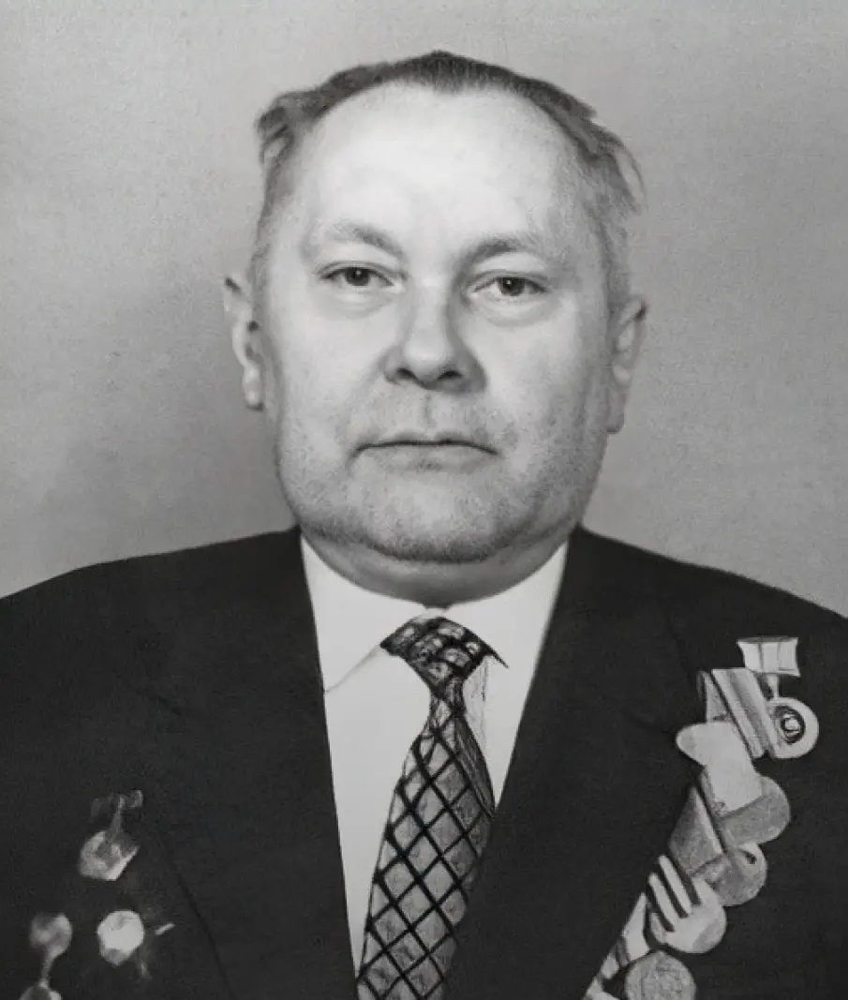
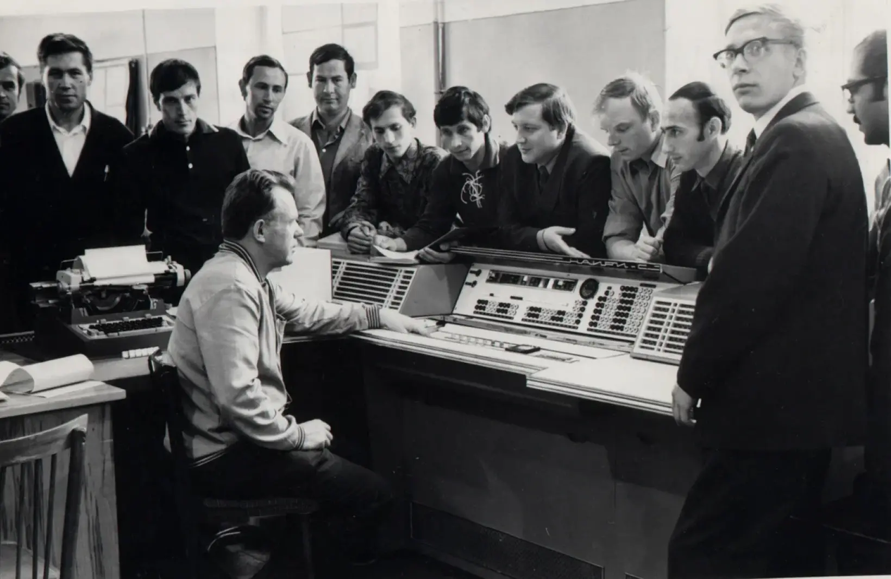

Открыты курсы повышения квалификации инженерно-технических работников Госкомнефтепродукта РСФСР.
Открыты курсы
Введены в строй механические (учебно-производственные) мастерские.
Занятия в учебном-производственной мастерской
Мастерская снаружи
1962
Созданы при УНИ Салаватский вечерний и Стерлитамакский вечерний общетехнический факультеты.
2000 м2
1962
Сдан в эксплуатацию первый учебный корпус общей площадью 21000 м2.

строительство главного учебного корпуса УНИ
1964
Всеволод Леонидович Березин
Ректором института назначен кандидат технических наук, доцент Всеволод Леонидович Березин.
1966
Первые выпускники курсов повышения квалификации руководящих работников и специалистов Госкомнефтепродукта РСФСР.
1966
Летом на берегу Павловского водохранилища развернут Спортивно-оздоровительный лагерь Уфимского нефтяного института – СОЛУНИ. Лагерь начинали обустраивать 40 энтузиастов преподавателей и сотрудников: несколько брезентовых палаток, деревянная кухня… Сегодня в СОЛУНИ каждое лето отдыхают более 1200 студентов и сотрудников университета, 600 студентов проходят практику.

1966
Вышел первый номер
1966
Вышел первый номер многотиражной газеты «За нефтяные кадры».

1967
1030 мест
Сданы в эксплуатацию два студенческих общежития на 1030 мест: № 3 и № 4.
1967
Владимир Владимирович Девликамов
1967
Профессор Владимирович Девликамов - первый сотрудник института - удостоен высокого звания «Почетный нефтяник СССР».


1968
Созданы два новых факультета: инженерно-экономический и автоматизации производственных процессов.